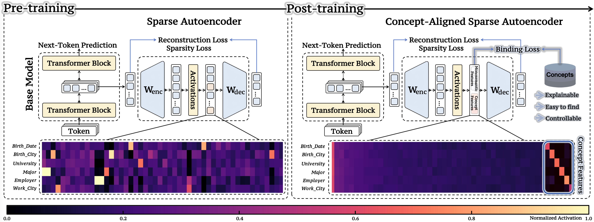
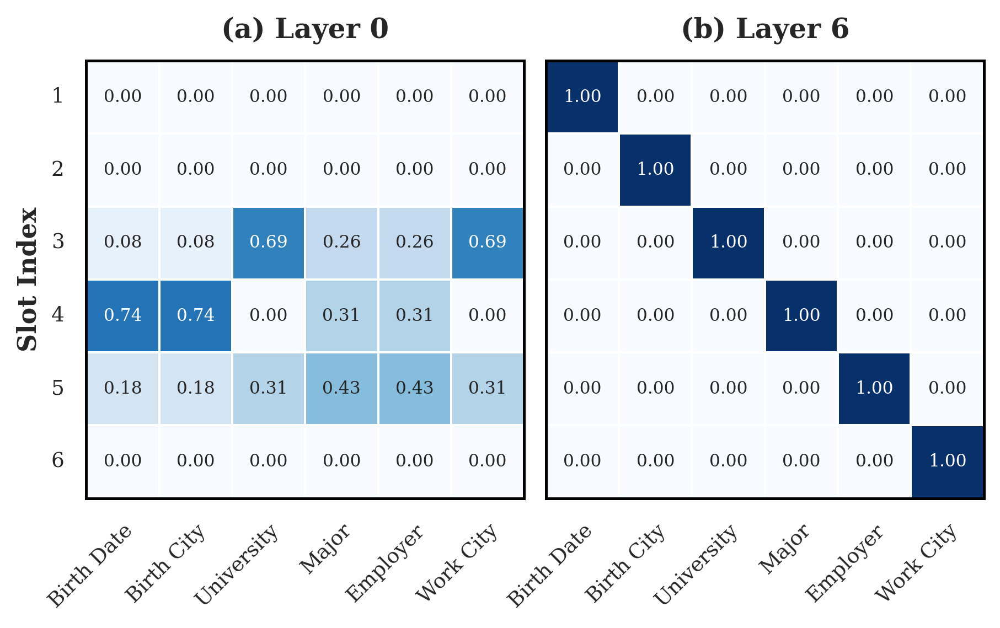
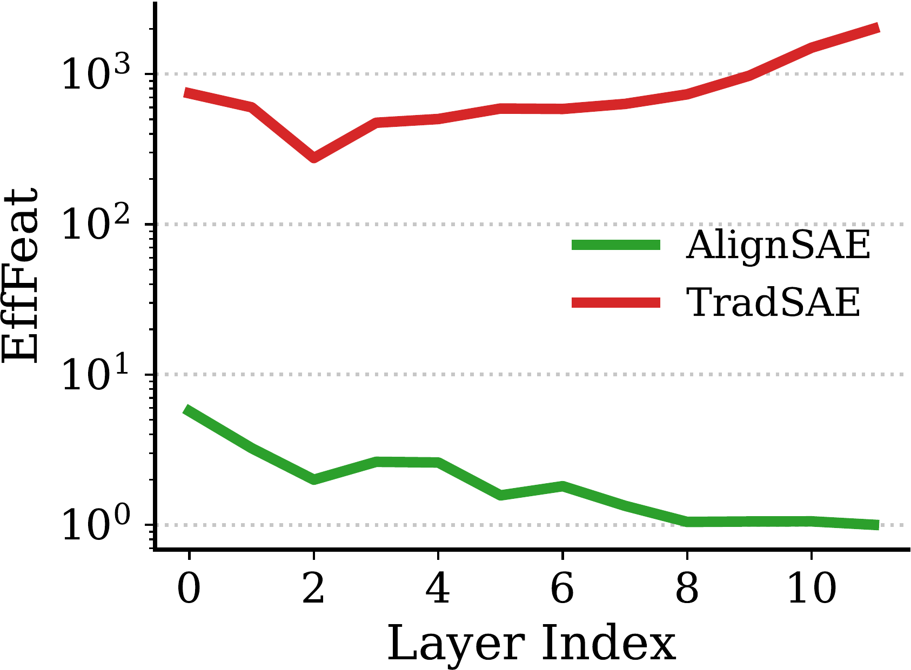
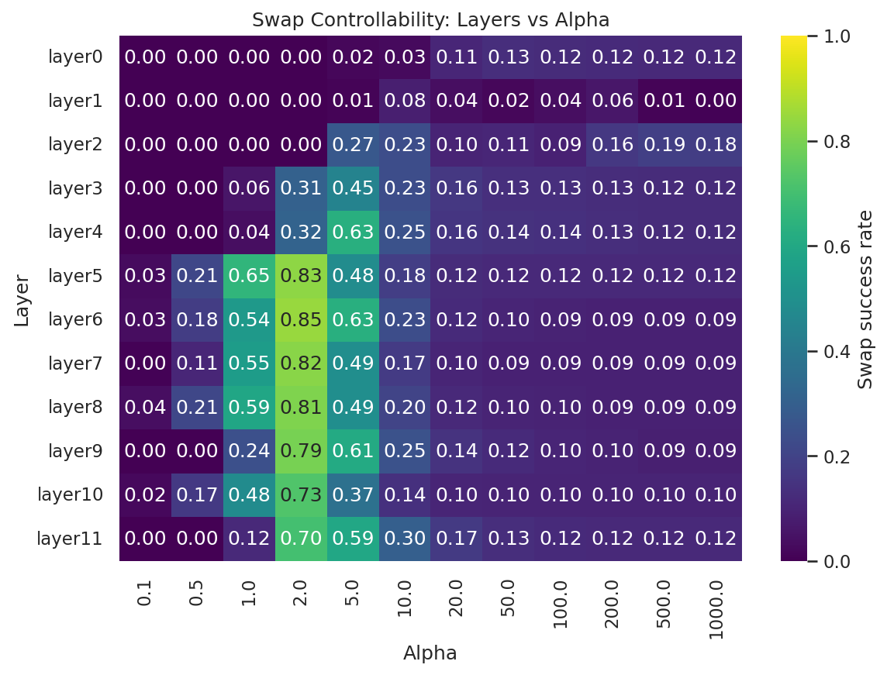
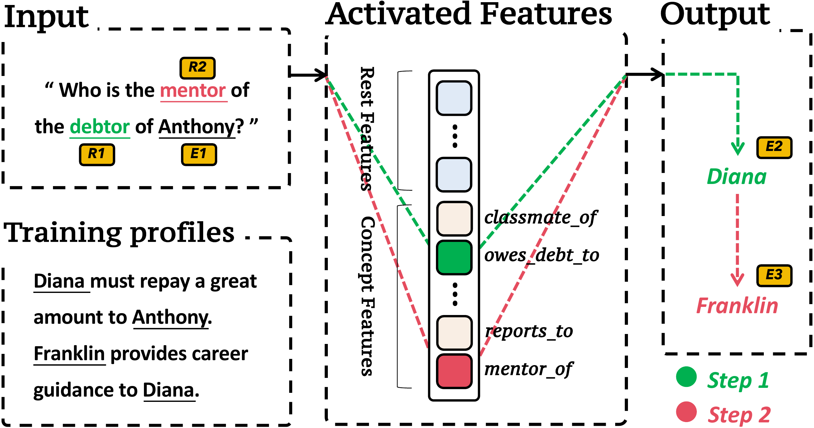
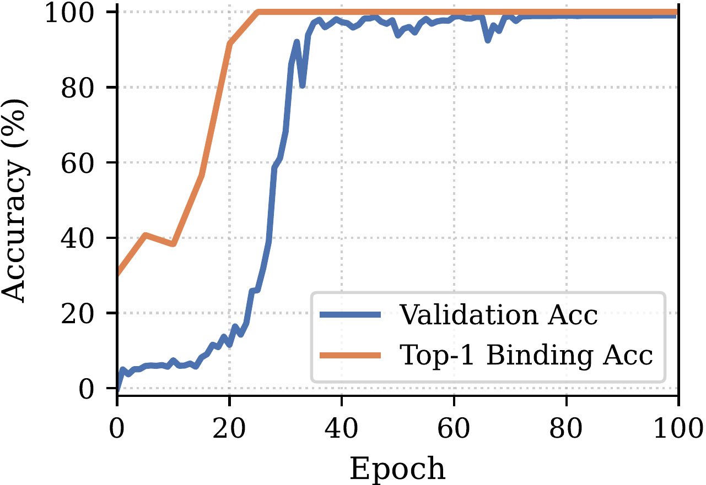
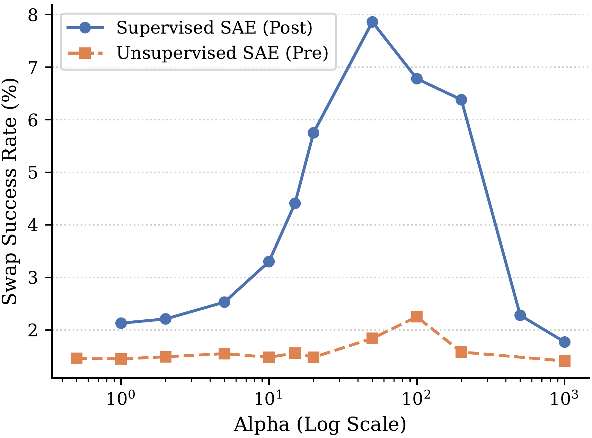
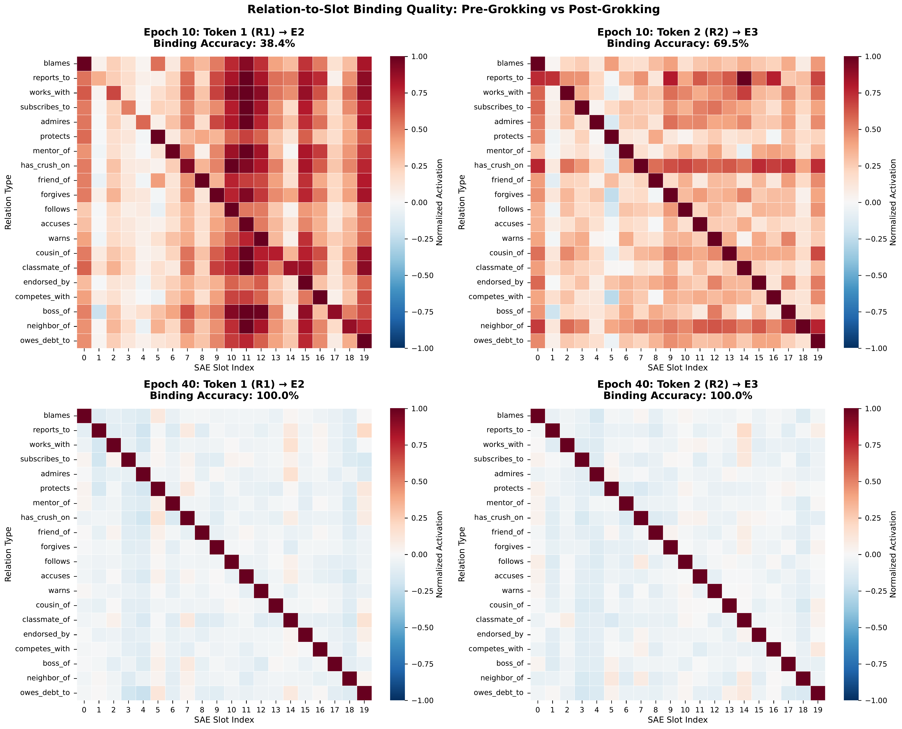

AlignSAE
Concept-Aligned Sparse Autoencoders
TL;DR
Give a Sparse Autoencoder a post-training stage, and each human concept binds to its own latent slot.
We borrow the LLM pre-train / post-train recipe for interpretability: after unsupervised SAE pre-training, a supervised post-training stage binds each ontology concept to a dedicated latent slot — converting a diagnostic tool into a reliable, controllable concept-level interface over a frozen model.

Abstract
Large Language Models encode factual knowledge in opaque parametric spaces, and while Sparse Autoencoders can decompose hidden activations into finer, more interpretable features, they have no explicit incentive to align those features with human-defined concepts — leaving representations entangled and distributed. AlignSAE addresses this with a “pre-train, then post-train” curriculum: after an unsupervised training phase, supervised post-training binds specific concepts from a predefined ontology to dedicated latent slots while preserving the remaining capacity for general reconstruction. This separation creates an interpretable interface where concepts can be inspected and controlled without interference from unrelated features. On GPT-2, across synthetic biographical QA (1-hop, 6 concepts) and compositional relational reasoning (2-hop, 20 concepts), AlignSAE enables precise causal interventions, such as reliable concept swaps, by targeting single, semantically aligned slots, and achieves disentanglement improvements of 9–∞× over standard SAEs measured via the Mutual Information Gap. It further supports multi-hop reasoning and a mechanistic probe of grokking-like generalization dynamics.
The Problem
01Interpretable features you can’t actually find
Mechanistic interpretability wants to read a model’s computation off its internal features. But individual neurons are apolysemantic: because of superposition, a network packs more independent features than it has neurons, so any one neuron fires for an entangled mixture of concepts.
Sparse Autoencoders bpromised a fix: learn an overcomplete, sparse basis in which features are cleaner than raw neurons. Yet because standard SAEs are trained unsupervised, they have no incentive to align their features with the concepts we care about. Two problems follow. First, finding the feature for a target concept is hard — you resort to contrast pairs or hunting through top-activating examples. Second, features stay entangled: one concept is smeared across many features, and one feature can answer to several unrelated concepts.
That unreliability undercuts everything downstream that needs feature-level control — safety steering, knowledge editing, attribution. Our task throughout is crelation completion, where the concepts are relation types such as BIRTH_CITY.
The fix takes its cue from how LLMs themselves are trained. Unsupervised SAE training is like pre-training: it discovers a broad feature space but guarantees no alignment. LLMs solve the analogous problem with post-training — instruction tuning, RLHF. So we add an SAE post-training stage that aligns the feature space with a chosen set of concepts.
The Result, In One Move
02Watch entanglement resolve into a clean diagonal
A concept×slot binding matrix tells you, for each relation, which latent slot fires. In a shallow layer the mass is smeared off-diagonal — concepts share slots. At a mid layer, AlignSAE collapses it to a near-perfect diagonal: one concept, one slot. Drag the slider between the shallow layer and Layer 6 to perform the transition yourself.
Hover a bright diagonal cell to see its concept–slot binding.
Endpoint metrics are the paper’s Layer 0 vs Layer 6 values (Table 1); intermediate positions are interpolated. Per-cell activations shown here are illustrative of the diffuse→diagonal pattern in Figure 3.

Method
03Pre-train, then post-train
Attach a supervised SAE to one frozen LLM layer. Its code splits into |R| dedicated concept slots (one per relation) and a large bank of K free features that carry everything else. Train in two phases — discover, then align.
Pre-train — discover a feature dictionary
Train the standard SAE objective, L_SAE = λr·recon + λs·sparsity, so the decoder forms a high-capacity dictionary before any semantic commitment. Applying strong supervision from scratch gives unstable binding — the unsupervised phase has to stabilize the representation first.
Post-train — bind concepts to slots
Keep the pre-trained dictionary and add three supervised losses on a staged schedule, routing each concept’s evidence into its slot while keeping the free-feature bank clean. Then verify by reading which slot fires, and steer with a decoder-space swap at moderate amplification (α ≈ 2).
Concept binding
A supervised cross-entropy that forces a one-to-one map: for an input carrying concept c, slot c activates and the rest are suppressed — so slot activations become a direct, verifiable readout.
Invariance & decorrelation
A penalty that decorrelates each concept slot from the free-feature bank, making slots invariant to surface variation and stopping concept evidence from leaking into the unsupervised features.
Sufficiency
An auxiliary value head must predict the concept’s answer from the concept slots alone — a stronger guarantee than naming the relation: the slot must carry enough to reproduce the value.
Results
04Clean binding, and control that actually works
| Metric | Layer 0 | Layer 6 | Δ |
|---|---|---|---|
| Diagonal binding acc ↑ | 0.238 | 1.000 | +0.76 |
| Swap success ↑ | 0.040 | 0.847 | +0.81 |
| Train slot acc ↑ | 0.232 | 1.000 | +0.77 |
| Test-Unseen acc ↑ | 0.165 | 0.912 | +0.75 |
Amplifying one concept slot (α≈2 at Layer 6) flips the answer type — slots are causal control knobs, not just diagnostics.
The six 1-hop ontology concepts, each bound to its own slot:


Composition
05Step-wise binding in 2-hop reasoning
Two-hop reasoning (20 relations, 60 entities) routes each prediction through an intermediate entity, so binding can be verified and intervened at the exact step each relation is used. AlignSAE reaches 100% step-wise binding and 4× higher swap success than a standard SAE at α≈50 — while the paper is candid that absolute 2-hop swap stays modest (7.86%): a single-position intervention can’t fully redirect attention-distributed computation. Binding does not equal full causal control.

Mechanistic Probe
06Grokking: knowing before showing
Because its slots are concept-aligned, AlignSAE doubles as a diagnostic for grokking. Top-1 binding accuracy saturates early, while validation accuracy lags with a delayed jump — a “lag between knowing and showing.” The model first organizes concept structure into stable slot features, and only later learns to use it for out-of-distribution generalization. Step-wise binding jumps from 38.4% (epoch 10) to 100% (epoch 40), ahead of the accuracy jump.



Scale
07Ninety-one relations, still diagonal
Scaling the ontology to a 91-relation subset of FB15K — same architecture, same Layer 6, only more slots — AlignSAE reaches 98.7% train binding and 95.6% diagonal accuracy, with 75.7% out-of-distribution binding on unseen templates and persons (chance is 1.1%). Reconstruction stays comparable to the small-ontology setting; only relations with very few training entities bind weakly.
In Short
08What to take away
- Reframes SAE interpretability as an alignment problem: a post-training stage — analogous to instruction tuning or RLHF — turns a diagnostic tool into an operational, verifiable, controllable interface over a frozen model.
- Three post-training losses on a staged curriculum: binding (one slot per concept), invariance (no leakage into free features), and sufficiency (a value head predicts the answer from slots alone).
- Clean single-slot control on 1-hop QA — 85% swap success (0.847 at α≈2), one-to-one binding, 9–∞× disentanglement — and steering that preserves fluency while sharply cutting perplexity versus the no-SAE baseline.
- Extends to composition and scale (100% step-wise 2-hop binding, 4× swap gain, 95.6% across 91 relations) while honestly documenting that binding ≠ full causal control in multi-hop reasoning.
Citation
09BibTeX
@article{yang2026alignsae,
title = {AlignSAE: Concept-Aligned Sparse Autoencoders},
author = {Minglai Yang and Xinyu Guo and Zhengliang Shi and Jinhe Bi
and Steven Bethard and Mihai Surdeanu and Liangming Pan},
journal = {Transactions on Machine Learning Research},
issn = {2835-8856},
year = {2026},
url = {https://openreview.net/forum?id=I9UjKxW4nq}
}